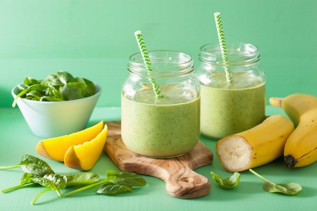
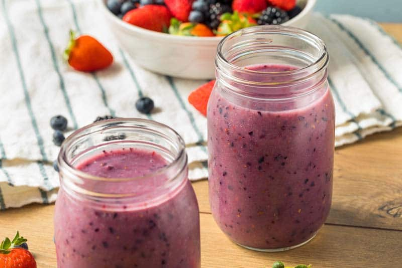

Bebidas
Smoothie de mango y espinacas
Ingredientes:
1. 1 taza de mango congelado.
2. 1/2 taza de espinacas frescas.
3. 1/2 plátano maduro.
4. 1 taza de leche de almendras (o la que prefieras).
5. 1 cucharadita de miel o jarabe de agave (opcional).
6. Hielo al gusto.
Preparación:
1. Coloca el mango, plátano, espinacas y leche de almendras en una licuadora.
2. Agrega miel o jarabe de agave si deseas un toque extra de dulzura.
3. Añade hielo para darle una textura refrescante.
4. Licúa hasta obtener una mezcla suave y cremosa.
5. Sirve en un vaso alto y disfruta de una bebida colorida y energética.
Agua de pepino y limón con menta
Ingredientes:
1. 1 pepino en rodajas finas.
2. Jugo de 1 limón.
3. Unas hojas de menta fresca.
4. 4 tazas de agua.
5. Hielo al gusto.
Preparación:
1. En una jarra grande, agrega las rodajas de pepino, el jugo de limón y las hojas de menta.
2. Llena la jarra con agua fría y mezcla bien.
3. Deja reposar la mezcla en el refrigerador durante 1-2 horas para que los sabores se fusionen.
4. Sirve con hielo y disfruta de una bebida refrescante y detoxificante.
Batido de frutos rojos y yogur griego
Ingredientes:
1. 1/2 taza de frutos rojos (fresas, arándanos, frambuesas).
2. 1/2 taza de yogur griego natural.
3. 1 cucharada de miel o sirope de agave.
4. 1/2 taza de agua o leche de almendras.
5. Hielo al gusto.
Preparación:
1. Coloca los frutos rojos, yogur griego, miel y agua o leche en la licuadora.
2. Añade hielo para darle una textura espesa y refrescante.
3. Licúa hasta que la mezcla sea suave.
4. Sirve en un vaso alto y decora con algunos frutos rojos adicionales para un toque especial.